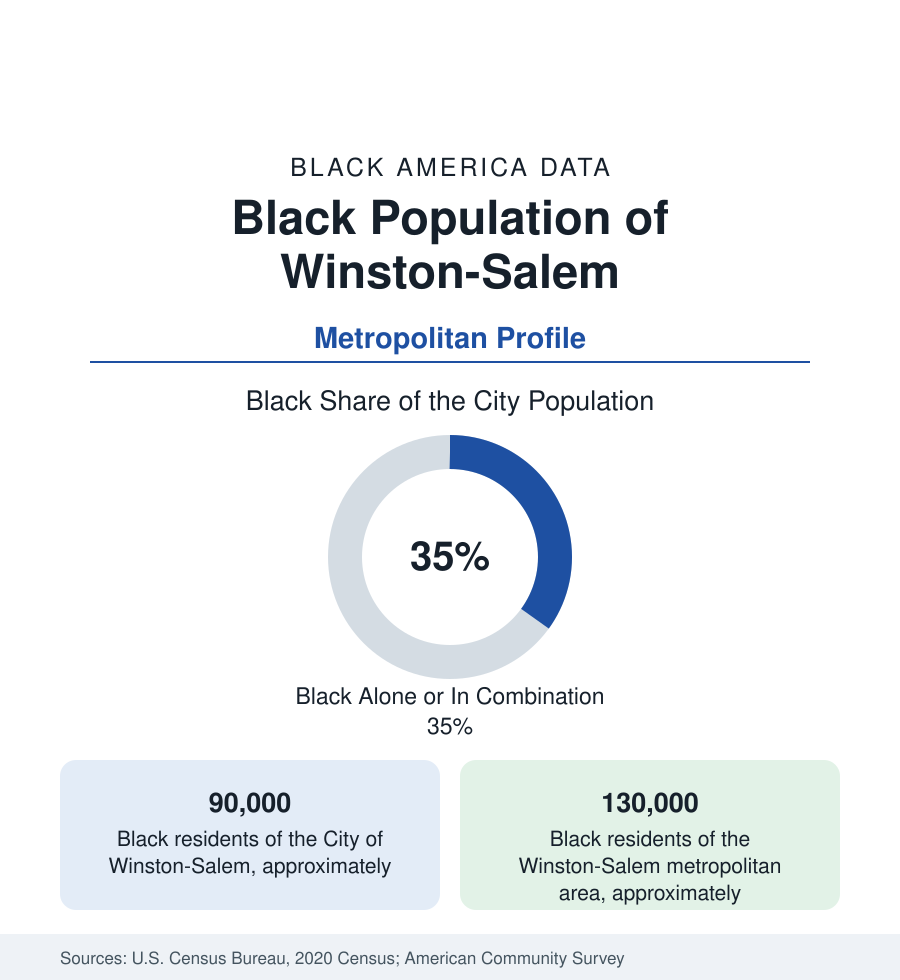

Black Cities
Black Winston-Salem: Tobacco's Twin City and the Arts School
Winston-Salem holds about 90,000 Black residents in the city and 130,000 across the metro — a tobacco city with an HBCU and an arts identity. The census profile.

Winston-Salem holds about 90,000 Black residents within the city — Black alone or in combination, roughly a third of its 250,000 people — and about 130,000 across the metropolitan area. The Camel cigarettes fortune built this tobacco twin city, and its Black community — factory hands and the Winston Mutual generation, the Winston-Salem State Rams and the National Black Theatre Festival — holds a data profile distinctive among Carolina's cities: industrial, collegiate, and theatrical at once.
East Winston and the Factory Districts
The community's geography is the city's east: East Winston — the district of the Black middle class's subdivisions and Winston-Salem State's campus, the Carver and Atkins school communities, the MLK Jr. Drive corridor — Happy Hill (the city's oldest Black community, its public-housing generations and its church roots reaching to the Moravian era's enslaved congregations at Salem), Columbia Terrace and the Boston-Thurmond district at downtown's north, and the Kimberly Park and Cleveland Avenue corridors of the factory era's housing. The Moravian file underlies the map: Salem's eighteenth-century records (the St. Philips Moravian congregation — among the oldest Black congregations in the South, its 1822 log church preserved in Old Salem) give the community a documented depth the industrial story sometimes covers. The suburban growth fills the county's east and the Kernersville corridor, thinning the city's share in the standard pattern.
Reynolds' Workforce and the Post-Tobacco Economy
R.J. Reynolds employed Black Winston-Salem at industrial scale for a century — the stemmeries and factories whose workforce mounted one of the era's landmark union drives (Local 22's 1940s organizing, a civil-rights-labor landmark in the labor histories, its defeat and legacy both in the record) — and the industry's long contraction defines the employment file's before. The after: the health systems (Wake Forest Baptist and Novant's Forsyth Medical — the metro's largest employers), the financial back offices (BB&T's — now Truist's — legacy operations), Hanesbrands' headquarters remnant, Winston-Salem State University (the HBCU founded 1892 as Slater Academy, its nursing and health-sciences programs the region's mobility machine), Wake Forest University's professional layer, and the Innovation Quarter's biotech conversion of the old Reynolds plants downtown. The indicators describe the transition's incompleteness: Black incomes below the metro pattern, East Winston's poverty tracts persistent, the professional class growing on the university and hospital payrolls from a lower base than the Triangle cities'.
The Theatre Festival and the Arts Economy
The cultural file is the profile's distinction: the National Black Theatre Festival (founded 1989 by Larry Leon Hamlin, held biennially, drawing tens of thousands and the Black theatre world's entire professional class to Winston-Salem — the 'Marvtastic' week is the city's largest cultural event in the attendance data) made this mid-size tobacco city the capital of Black theatre in America by the profession's own reckoning. Around it: the University of North Carolina School of the Arts (the state's conservatory, its Black enrollment and faculty files a state arts-education datum), the Delta Fine Arts Center (among the oldest Black arts organizations in the South), the Diggs Gallery at WSSU, and Maya Angelou's Winston-Salem years (her Wake Forest professorship anchoring her final decades here). The Black press (the Winston-Salem Chronicle, since 1974), the churches of East Winston, and the Safe Bus Company story — the Black-owned transit line that carried the community for decades, among the largest Black-owned bus companies of its era — complete the institutional record.
Change and the Estimates
The estimates show the metro growing slowly by Carolina standards, its Black population steady in the city and growing in the county's suburbs — the Innovation Quarter and hospital expansions adding professional increments, East Winston's revitalization plans (the corridor and housing files) testing the legacy districts' future, and the festival's biennial economy anchoring the cultural brand. The school file (Winston-Salem/Forsyth County Schools, a merged city-county system — the county pattern of the North Carolina data) carries the assignment-era history the state is known for.
Reading the Winston-Salem Numbers
Winston-Salem is the tobacco-and-theatre profile: a Black community built by the cigarette factories and their union wars, schooled by its own university, and known to the world for a stage. Its 130,000 metro residents hold a smaller, denser version of the Carolina story — factory to hospital, district to campus — with the footlights on.
More in Black Cities
Black Atlanta: Population, Distribution, and Growth of a Black Metropolis
Metro Atlanta holds more than two million Black residents — roughly one in three, second only to New York. The suburban distribution, migration history, and composition of Black Atlanta in the census data.
Black New York: The Largest Black Population in America
The New York metropolitan area holds about 3.4 million Black residents — more than any metro in the nation — and the city itself about two million. The census profile.
Black Washington: The District and the Metro
The Washington metro holds about 1.6 million Black residents, and the District itself — long a majority-Black city — now records a Black share near 41 percent. The census profile.
Source: U.S. Census Bureau, 2020 Census; American Community Survey; Population Estimates Program.